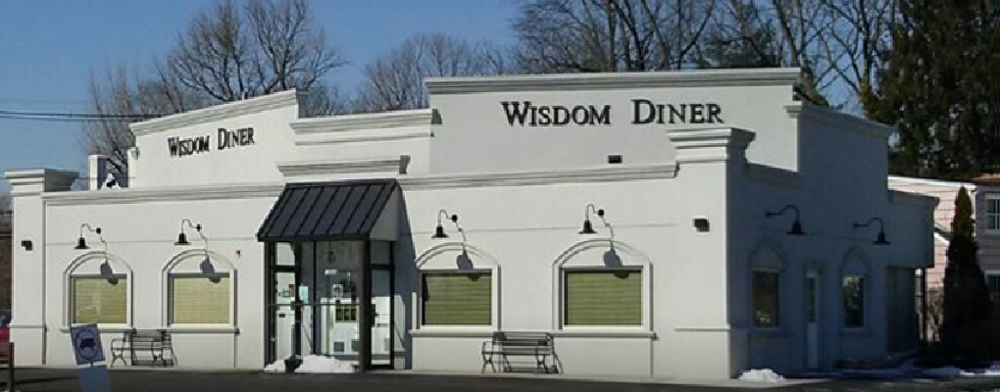
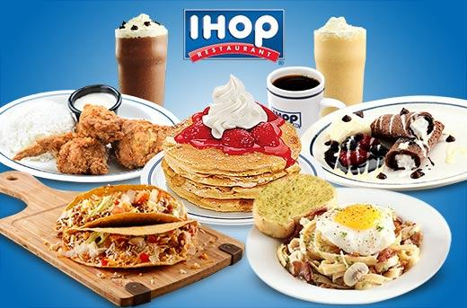

McDonalds

Nice employees but I had to repeat my order about 10 times and they still got it wrong. They did refund some of the money and gave us a bunch of extra food due to a few mistakes they made. The food was good for a McDonald's. My friend enjoys the food here. Salads and fries are good. I appreciate the staff at this location. Helpful and accommodating. Stand out service- caring and pleasant.
Wisodom Diner
I love the Wisdom diner especially for their breakfasts. They are always perfectly prepared. The waitresses are all lovely, and the cute curly hair man that serves you your coffee the minute you sit down is so sweet and funny. We are here 2 or 3 times a week. The burgers and club sandwiches are very good as well .Went here for breakfast, this small, clean diner had excellent coffee. My omelette, which contain mushrooms and other veggies was not watery.(some places don't know how to make a veggie omelette). The homefries were crispy and no grease was on the plate at all. Best of all, I didn't hear plates being tossed, by various waitresses around me.
IHOP
This is a very nice, bright, roomy IHop. Fast, pleasant service, good food. The pancakes look good, but be aware that the typical "special" pancakes are over 1000 calories a plate - that's before you even think about syrup on top. They have a huge assortment of omelets, and you can order up any custom omelet you can think of. I got ones with fresh spinach, cheese and mushrooms - and it was excellent. I was really impressed. The pancakes are really good too. Overall - good and service was good. Coffee tolerable, but nothing to get excited about. Even the pricing on the pancakes and omelets was good. But the one negative surprise was the price on the drinks: coffee was over $2, and a small OJ was also more than $2. Not a big deal - just a surprise.